Префектура Вакаяма · Коя, Кацураги, Кудояма · паломничество
Гора Коя и её подножие: два дня по следам Кукая от храмового города до Кудоямы
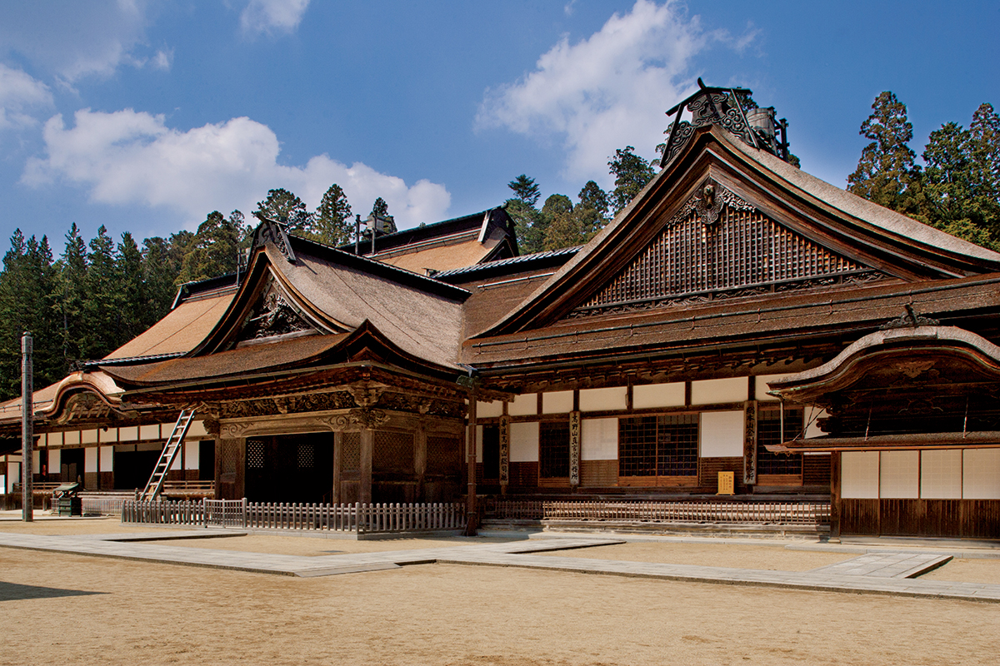
Гору Коя основал монах Кукай, и почти каждый, кто сюда приезжает, видит только храмы на вершине. Но паломники веками начинали путь внизу, в деревнях у подножия, и лучше всего понять это место можно, если пройти по этим следам: первый день наверху, второй в Кацураги и Кудояме.
День первый
Храмовый город на вершине
Гору Коя в 816 году основал Кукай (774–835), известный также под посмертным именем Кобо-дайси. Он принёс в Японию учение эзотерического буддизма и стал основателем школы Сингон. Здесь, в горной котловине на высоте около 800 метров, вырос целый храмовый город: шесть километров с запада на восток и три с севера на юг. В нём 117 храмов, среди них Конгобу-дзи и две главные святыни, которые вместе называют «рёдан»: храмовый комплекс Дандзё-гаран и Окуно-ин.
В самой глубине Окуно-ин находится усыпальница Кукая. Верующие убеждены, что он не умер, а до сих пор сидит там в медитации и молится о мире и счастье людей. Дважды в день монахи приносят ему еду. Этот обряд называется «сёдзингу», и его не прерывали больше тысячи лет. В 2004 году гору Коя включили в объект Всемирного наследия «Священные места и паломнические пути в горах Кии», и паломников с туристами с тех пор стало ещё больше.
На Коя можно приехать на один день, но мы рекомендуем остаться на ночь. Из 117 храмов 51 принимает гостей как храмовое подворье, сюкубо. После заката и ранним утром на территории обеих святынь стоит тишина, и это время достаётся только тем, кто ночует на горе. Место молитвы открыто для всех в любой час.
Конгобу-дзи: сердце горы
Конгобу-дзи это главный храм школы Коясан-Сингон, к которой относятся около 3600 храмов по всей стране. Он стоит почти в центре горы, а в первые годы Конгобу-дзи называли всю гору целиком. Зал, где хранится главная святыня, окружён росписью «Журавли», а по всему храму можно увидеть расписные раздвижные перегородки работы мастеров школы Кано и современного художника Хироси Сэндзю.
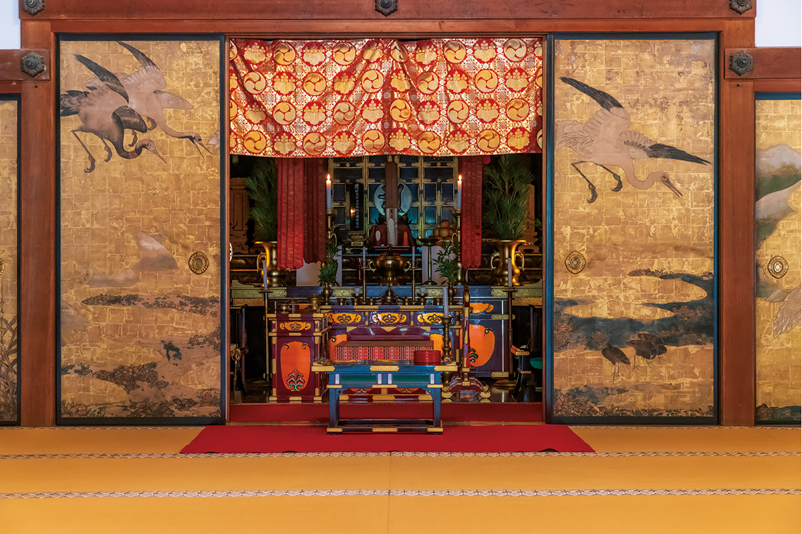
Вход в Конгобу-дзи стоил 1000 иен для взрослых и школьников средних классов в 2022 году.
Храм Конгобу-дзи
- Адрес
- префектура Вакаяма, уезд Ито, Коя, Коясан, 132
- Телефон
- +81 736-56-2011
- Часы работы
- 8:30–17:00 (вход до 16:30)
- Цены / Вход
- с 13 лет 1000 иен, школьники младших классов 300 иен, дошкольники бесплатно
Дандзё-гаран: учение Кукая в зданиях
С Дандзё-гаран Кукай, по преданию, начал строить гору Коя. Главное сооружение комплекса, пагода Компон-даито, задумывалась как главное место практики эзотерического буддизма. Её высота 48,5 метра, выше на горе нет ни одного здания. Внутри стоит объёмная мандала: статуи будд, расставленные так, чтобы учение можно было увидеть глазами.
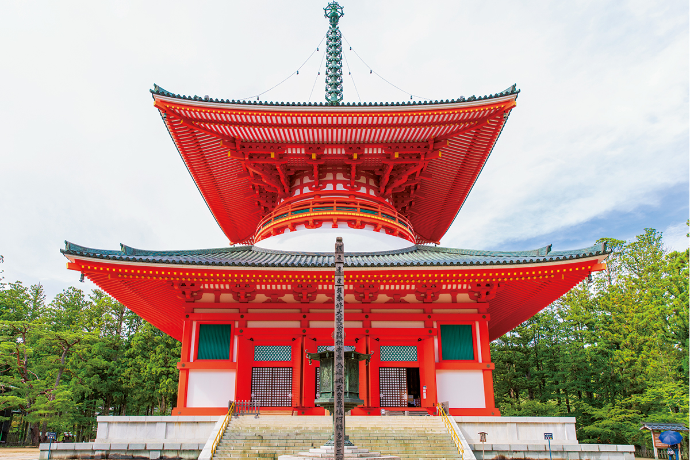
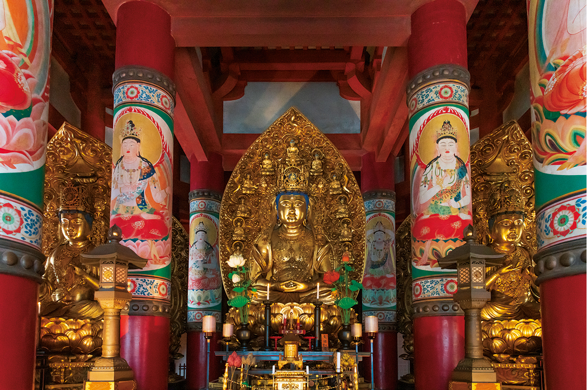
Сама территория открыта всегда, а вход в Компон-даито и в главный зал Кондо в 2022 году стоил по 500 иен.
Дандзё-гаран
- Адрес
- префектура Вакаяма, уезд Ито, Коя, Коясан, 152
- Телефон
- +81 736-56-2011
- Часы работы
- территория открыта всегда, Компон-даито и Кондо 8:30–17:00 (вход до 16:30)
- Цены / Вход
- Компон-даито и Кондо по 500 иен с 13 лет, младше бесплатно
«Тюо сёкудо Самбо»: постная кухня без церемоний
Эта столовая готовит постную монашескую еду сёдзин-рёри для многих храмов горы. Главное блюдо здесь «Сёдзин ханакаго бэнто» за 2300 иен (цена 2022 года). Его состав повторяет угощение, которым подворья встречают гостей: дэнгаку из просяного фу, кунжутный тофу, тушёные овощи. Столовая вошла в гид Мишлен по Киото, Осаке и Вакаяме 2022 года.
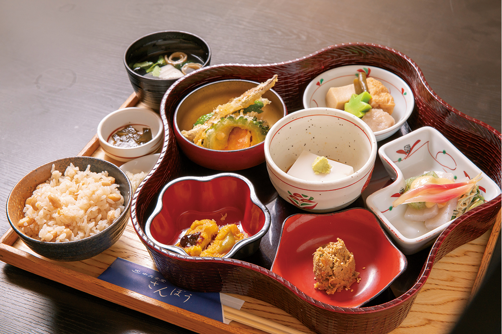
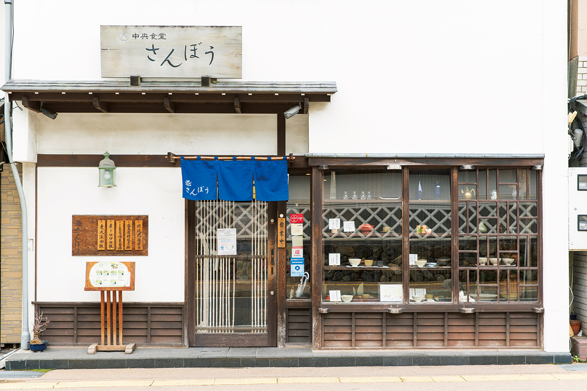
«Тюо сёкудо Самбо»
- Адрес
- префектура Вакаяма, уезд Ито, Коя, Коясан, 722
- Телефон
- +81 736-56-2345
- Часы работы
- 11:00–15:00 (до окончания блюд)
- Выходные
- нерегулярно
Сайдзэн-ин: подворье для первого раза
Подворье Сайдзэн-ин стоит рядом с Дандзё-гаран. Здесь три сада работы Мирэя Сигэмори (1896–1975), известного мастера японского сада. Все три внесены в государственный реестр памятников. Из 15 номеров часть устроена как гостиничные, и для новичка это удобно. Есть и программы: например, экскурсия по Дандзё-гаран длится около полутора часов и стоила 1000 иен в 2022 году. Говорят, когда-то здесь подолгу жил Коносукэ Мацусита (1894–1989), основатель компании «Панасоник», и закончил тут одну из своих книг.
Ночь с ужином и завтраком стоила от 17 000 иен в 2022 году. Гости подворья утром могут прийти на службу в главный зал.
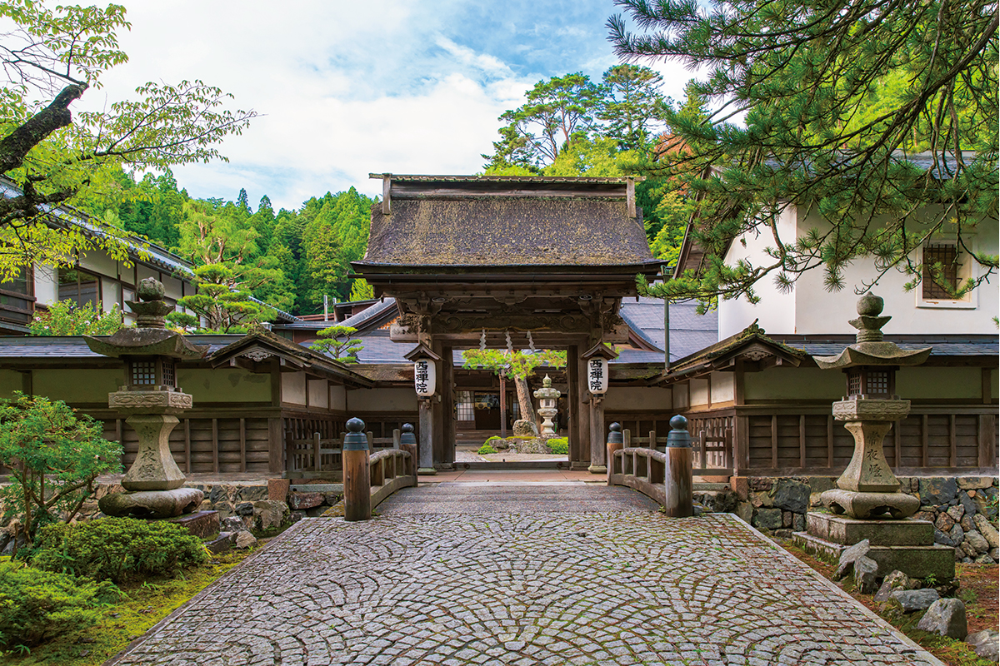
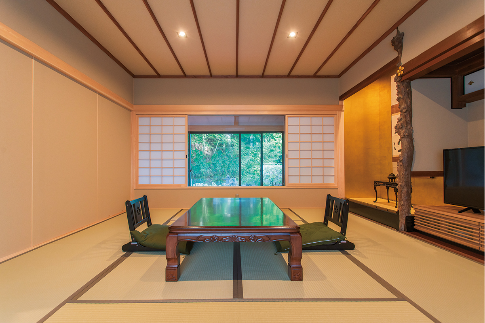
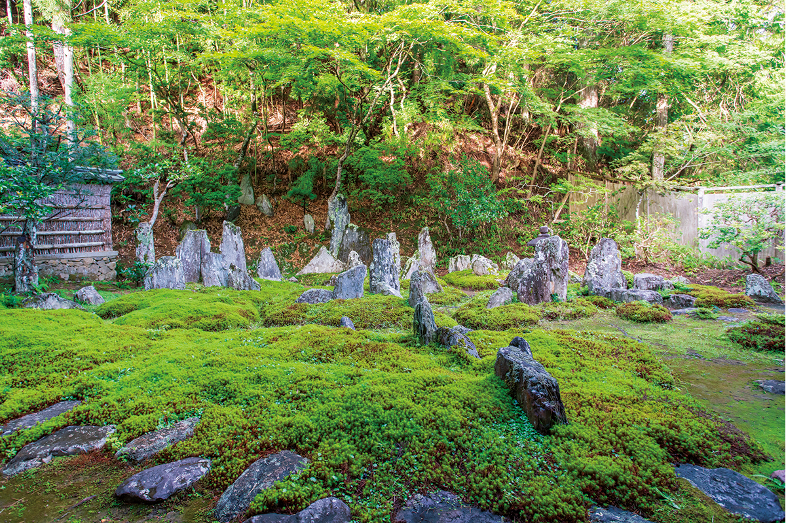
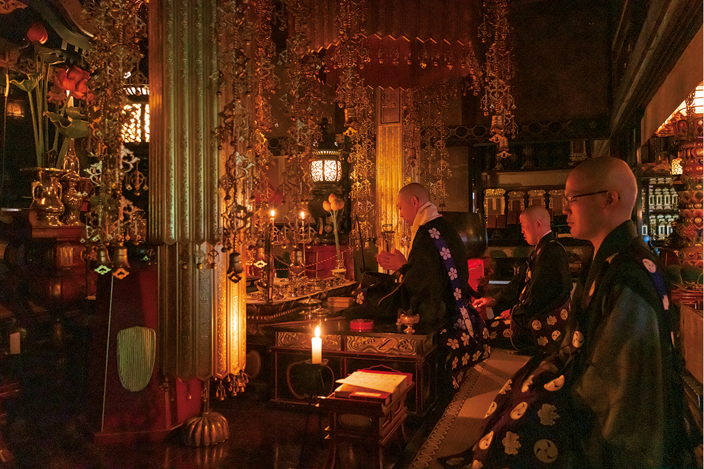
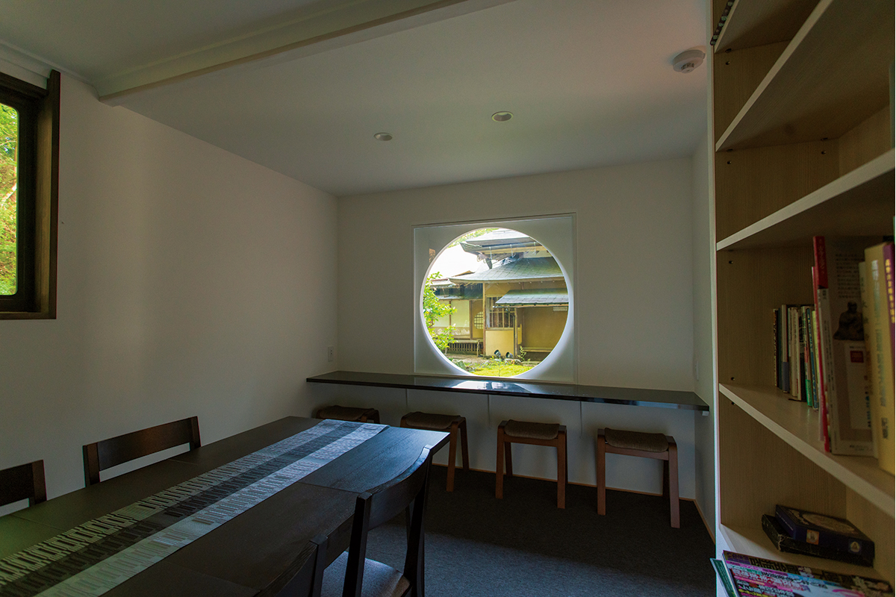
Подворье Сайдзэн-ин
- Адрес
- префектура Вакаяма, уезд Ито, Коя, Коясан, 154
- Телефон
- +81 736-56-2411
- Цены / Вход
- ночь с ужином и завтраком от 17 000 иен
- Номера
- 15; Wi-Fi, общие ванные и туалеты, в особом номере своя ванная и туалет
Ночной Окуно-ин
Ради этого стоит ночевать на горе. После ужина и до отбоя можно пройти по Окуно-ин с гидом. Записаться на экскурсию несложно, а гид расскажет о том, что днём легко пропустить.
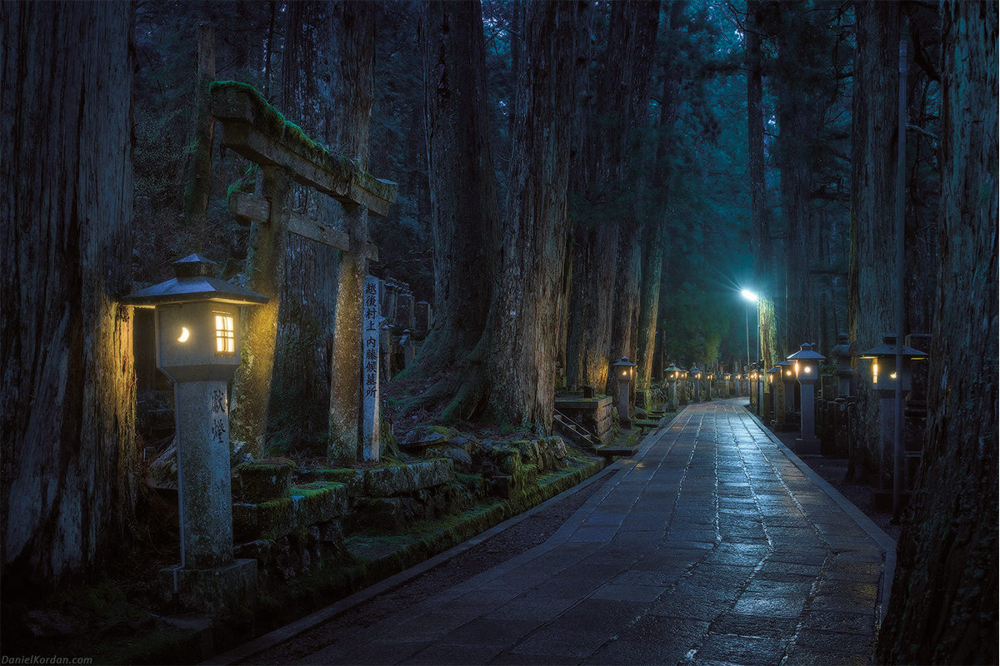
Ночная экскурсия по Окуно-ин
- Телефон
- +81 90-2106-1146
Что увезти с горы
С горы принято везти сладости и кунжутный тофу. «Мироку-иси» из лавки «Касакуни» названы в честь камня Мироку у Окуно-ин и стоили от 120 иен за штуку в 2022 году. «Кайсо гома-дофу» из лавки «Кадохама гома-дофу» делают из белого кунжута: чистый вкус и плотная, тягучая текстура, от 250 иен за штуку в 2022 году.
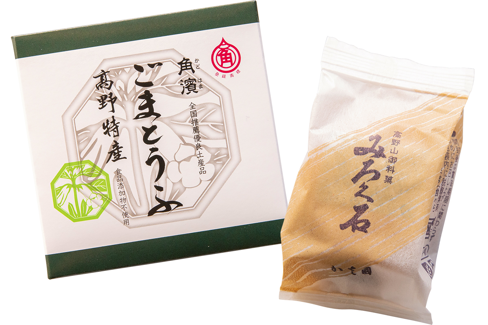
Цифровой музей горы Коя
В августе 2022 года на горе открылся Цифровой музей горы Коя. В нём есть виртуальный кинотеатр с рассказом гида, кафе «Коясан кафе Сидзуку» с кофе от «Сарутахико кофи» и местной едой, а также музейный магазин. Вход в музей бесплатный, сеанс в кинотеатре стоил 1000 иен для взрослых в 2022 году.
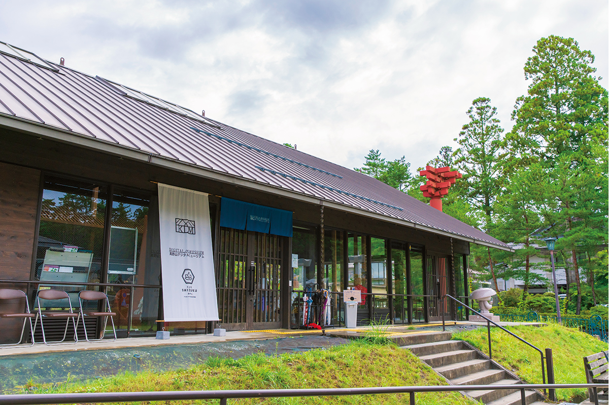
Цифровой музей горы Коя
- Адрес
- префектура Вакаяма, уезд Ито, Коя, Коясан, 360
- Телефон
- +81 736-26-8571
- Часы работы
- 10:00–17:00
- Выходные
- кинотеатр закрыт в последний понедельник месяца; с декабря по февраль нерегулярные выходные
- Цены / Вход
- бесплатно; кинотеатр 1000 иен, школьники 500 иен
День второй
Деревни у подножия
Писательница Масако Сирасу (1910–1998), автор книг о старой Японии, побывала в деревне Амано в городке Кацураги и описала её в книге «Скрытые деревни». Она была явно потрясена: «Огромное поле, открытое в уголке неба... быть может, и Такамагахара была такой». Такамагахара в японских мифах это небесная равнина, где живут боги. И полвека спустя Амано остаётся очень красивой горной деревней.
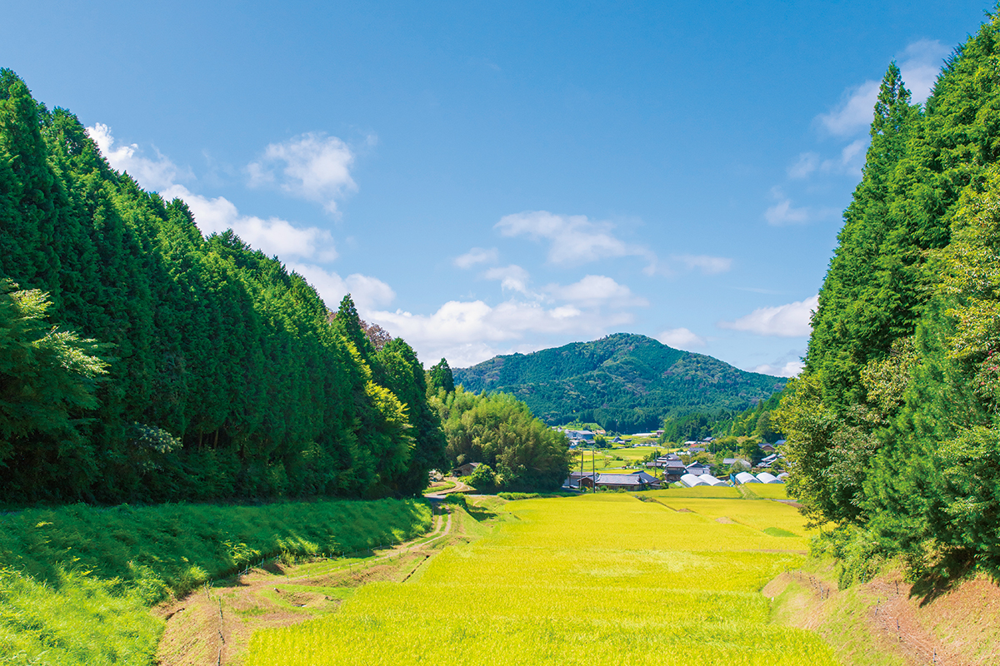
По преданию, землю для горы Коя Кукаю подарила богиня Ниуцухимэ, которой поклоняются в святилище в Амано. Привёл его туда её сын, бог Такано-мико, он же Кариба-мёдзин, вместе с белой и чёрной собаками.
Паломники поднимались на Коя разными дорогами, и семь главных из них имеют общее название. Главная дорога, Тёиси-мити, начинается в городке Кудояма. Название городка связывают с преданием: Кукай девять раз в месяц спускался сюда навестить мать, которая жила в храме Дзисон-ин. Вдоль дороги до сих пор стоят 180 каменных столбов тёиси, через каждые 109 метров, от пагоды Компон-даито до Дзисон-ин. Паломники обходили святыни у подножия, кланялись каждому столбу и так проходили около 20 километров до вершины.
Центром своего учения Кукай сделал храм Тодзи в Киото, а в последние годы жизни перебрался на Коя. Уединённая гора стала местом суровой практики и местом, где он ушёл в вечную медитацию. О чём он думал, ступая по этой земле? Если идти, держа этот вопрос в голове, пейзаж выглядит по-другому. В 2023 году отмечали 1250 лет со дня рождения Кукая: в Конгобу-дзи тогда прошли особые службы и показали главную святыню храма.
Святилище Ниуцухимэ: та, что отдала гору
По преданию, святилищу больше 1700 лет. Здесь почитают богиню Ниуцухимэ, которая привела Кукая на Коя и отдала ему свои земли. Поэтому она стала покровительницей школы Сингон, и вокруг святилища сложилась вера, в которой синто и буддизм соединились. С давних времён паломники заходили сюда перед подъёмом на гору. Четыре главных здания святилища самые большие в Японии в своём стиле, они и ворота с башней охраняются как важные культурные ценности.
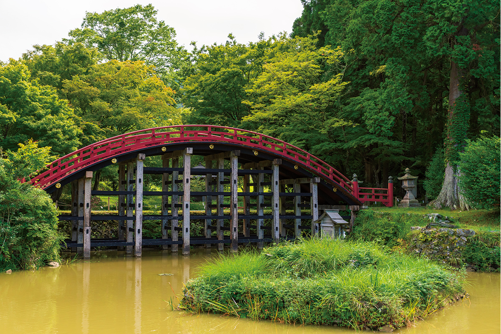
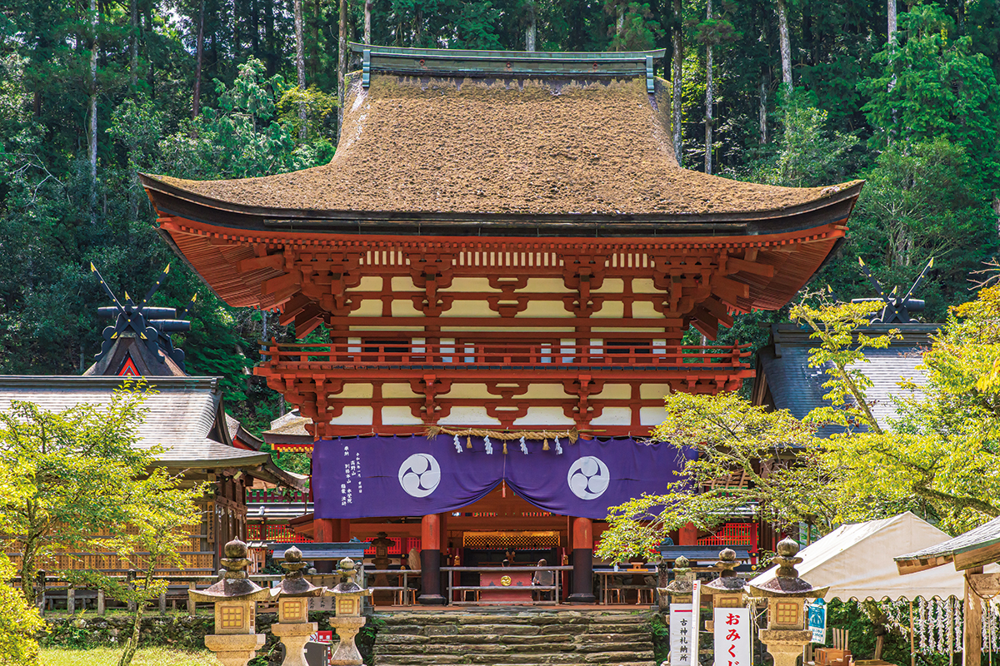
Святилище Ниуцухимэ
- Адрес
- префектура Вакаяма, уезд Ито, Кацураги, Ками-Амано, 230
- Телефон
- +81 736-26-0102
- Часы работы
- территория открыта всегда, киоск с амулетами 8:45–16:30
- Цены / Вход
- бесплатно; особый осмотр с рассказом об истории 500 иен (в определённые дни)
«Кафе Кякудэн»: передышка до и после
Предки хозяина кафе служили в святилище Ниуцухимэ, и кафе устроено в их старом доме. Здесь подают обед на местном рисе «Амано» за 1500 иен (цена 2022 года): можно выбрать рисовые шарики с солью, рис с сырым яйцом, просто белый рис или рисовую кашу на чае.
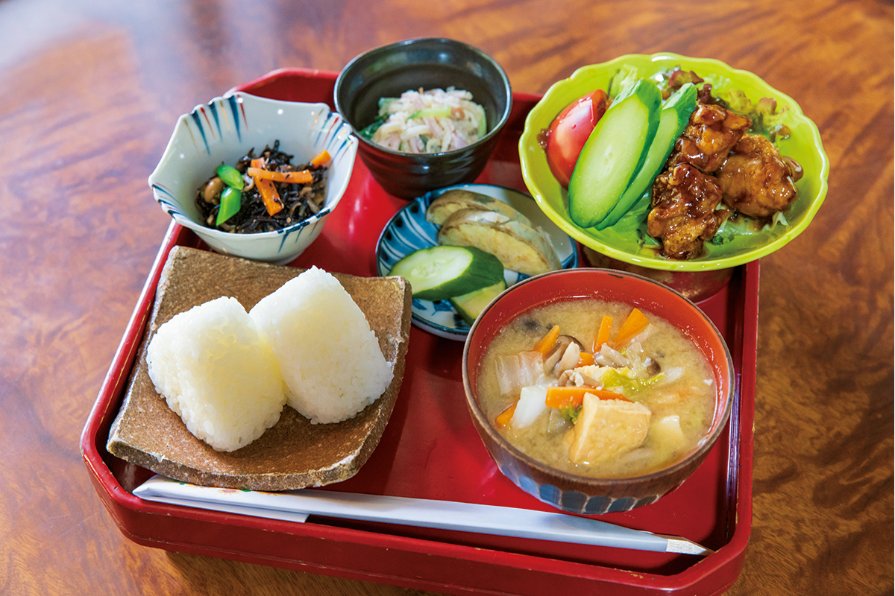
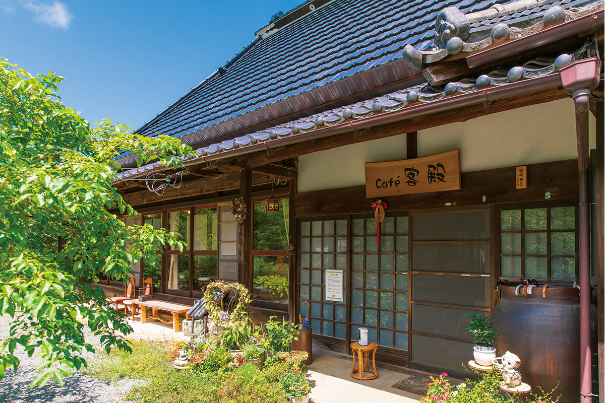
«Кафе Кякудэн»
- Адрес
- префектура Вакаяма, уезд Ито, Кацураги, Ками-Амано, 140
- Телефон
- +81 736-26-0372
- Часы работы
- 11:00–16:00 (последний заказ 15:30)
- Выходные
- со вторника по четверг (в праздники открыто)
Дзисон-ин: храм матери Кукая
Дзисон-ин основали как храм-управу, через которую строили гору Коя. Женщинам на Коя подниматься было запрещено, поэтому мать Кукая, Тамаёри-годзэн, жила здесь, и после смерти её почитают в этом храме. Говорят, желание сбудется, если оставить в храме табличку эма в форме груди. Поэтому сюда приезжает много женщин.
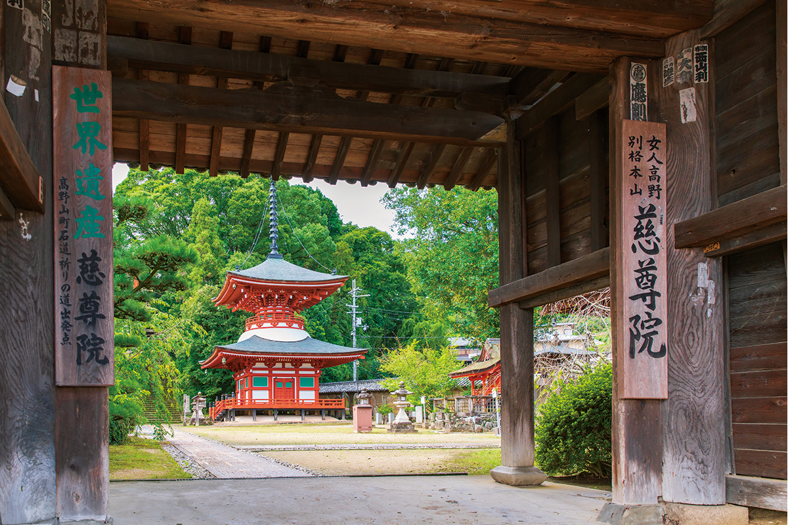
Храм Дзисон-ин
- Адрес
- префектура Вакаяма, уезд Ито, Кудояма, Дзисон-ин, 832
- Телефон
- +81 736-54-2214
- Часы работы
- открыто всегда
- Цены / Вход
- бесплатно
Святилище Ниукансёбу и начало Тёиси-мити
Святилище Ниукансёбу, как и Дзисон-ин, по преданию основал Кукай. Здесь почитают покровителей горы Коя, богиню Ниуцухимэ и бога Такано-мико. За большими воротами тории ведёт лестница в 119 ступеней, и со вторых ворот виден главный зал. Его построили в конце периода Муромати, и он охраняется как важная культурная ценность.
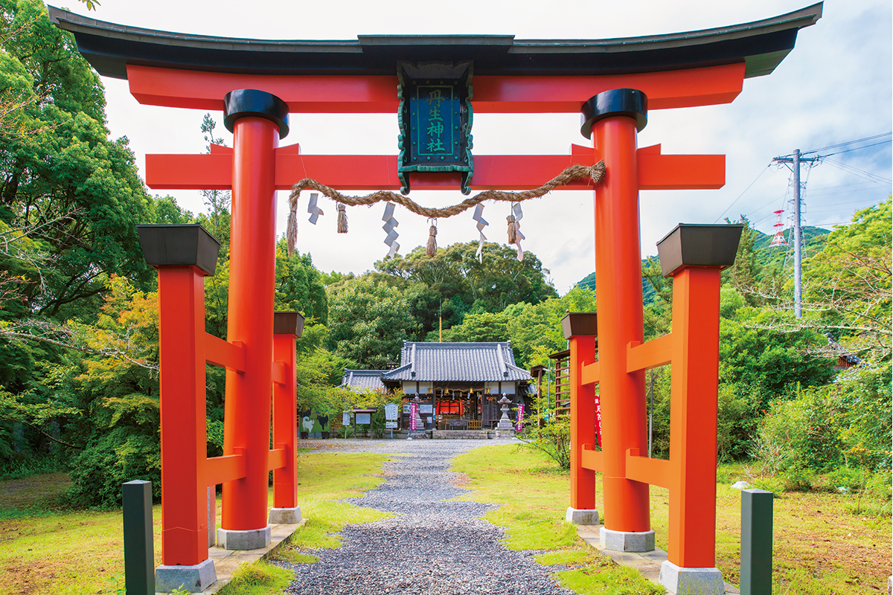
На лестнице от Дзисон-ин к святилищу стоит первый каменный столб дороги Тёиси-мити. Если увидите его, поклонитесь. Путь до вершины около 20 километров, и сегодня это ещё и треккинговый маршрут.
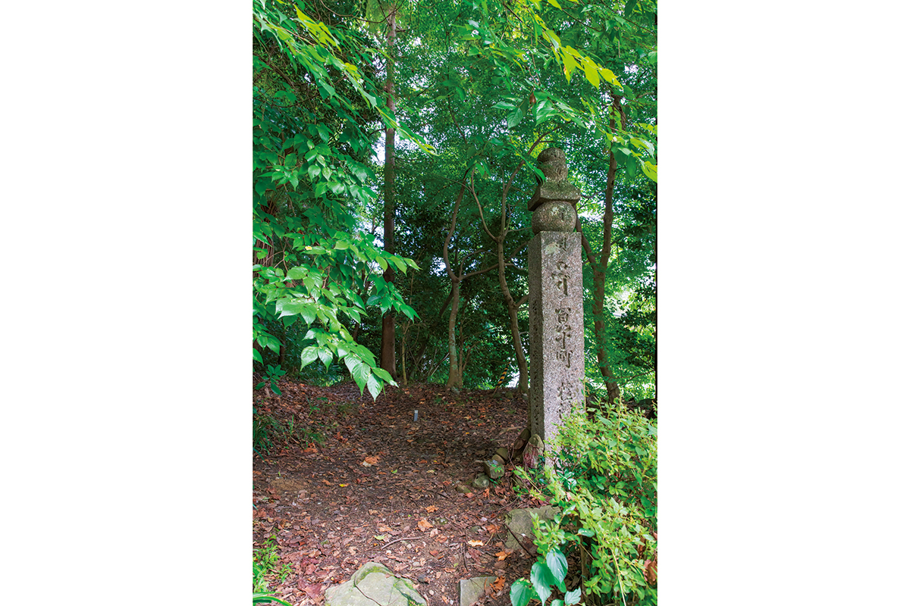
Святилище Ниукансёбу
- Адрес
- префектура Вакаяма, уезд Ито, Кудояма, Дзисон-ин, 835
- Телефон
- +81 736-54-2754
- Часы работы
- открыто всегда
- Цены / Вход
- бесплатно
Дорога Тёиси-мити, начальный столб
- Адрес
- префектура Вакаяма, уезд Ито, Кудояма, Дзисон-ин, 832
Фото: Кадзуя Хаяси.